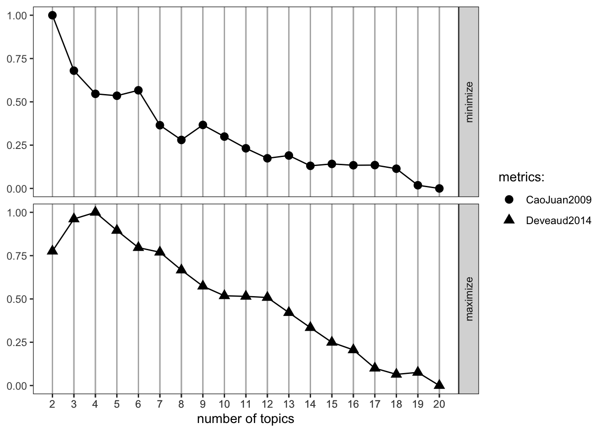
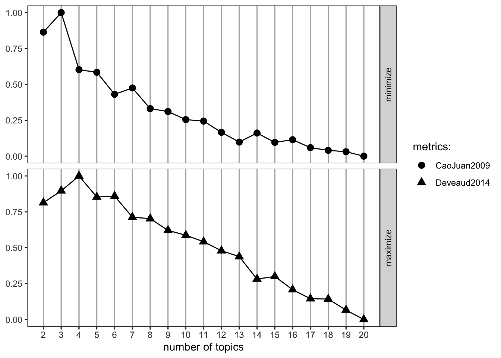
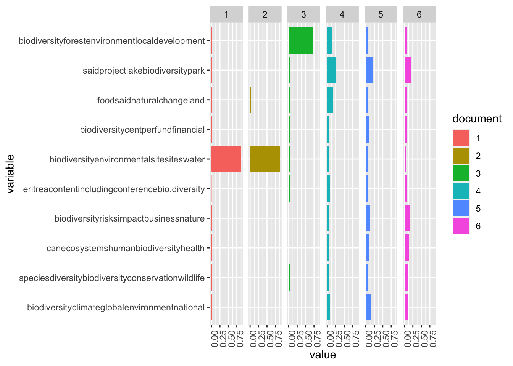

# Reading in files
pre_files <- list.files(pattern = ".docx",
path = "/Users/andrewbartnik/Desktop/misc/MEDS/Spring/text/text_analysis/data/lab2/files2",
full.names = TRUE,
recursive = TRUE,
ignore.case = TRUE)
# Saving objects
pre_dat <- lnt_read(pre_files)
bing_sent <- get_sentiments('bing')
nrc_sent <- get_sentiments("nrc")Biodiversity Sentiment and Topic Analysis
NLP
R
Assignments
ML
I used the Nexis Uni database to analyze the sentiment associated with Biodiversity. This assignment was part of EDS 231 - Text and Sentiment Analysis for Environmental Science
Sentiment Analysis
I used the Nexis Uni database to evaluate the sentiment surrounding biodiversity articles, and then analyzed the topics that articles fall under.
I first accessed the Nexis Uni database through the UCSB library. I then chose to search for articles related to biodiversity and downloaded a batch of 100 .docx files.
https://github.com/JBGruber/LexisNexisTools/wiki/Downloading-Files-From-Nexis
I cleaned artifacts of the data collection process (date strings, etc), and saved the metadata, article title, and paragraph contents to their own objects - adding this all together into a dataframe.
meta <- pre_dat@meta
articles <- pre_dat@articles
paragraphs <- pre_dat@paragraphs
data <- tibble(Date = meta$Date, Headline = meta$Headline, id = pre_dat@articles$ID, text = pre_dat@articles$Article)
head(data)# A tibble: 6 × 4
Date Headline id text
<date> <chr> <int> <chr>
1 2023-04-11 -Kao Releases Biodiversity Report Based on the TNFD Fr… 1 "Kao…
2 2023-04-11 -Kao Releases Biodiversity Report Based on the TNFD Fr… 2 "Apr…
3 2023-04-04 -PLATINUM RECOGNITION FOR MOY PARK'S BIODIVERSITY INIT… 3 "Apr…
4 2023-04-04 -PLATINUM RECOGNITION FOR MOY PARK'S BIODIVERSITY INIT… 4 "Moy…
5 2023-03-22 -Umicore - Growing our business with Zero Harm to biod… 5 "Bio…
6 2023-03-22 -Umicore - Growing our business with Zero Harm to biod… 6 "Mar…Exploring the data a bit!
# date freq
date_freq <- data %>%
group_by(Date) %>%
summarise(freq = n())
ggplot(date_freq, aes(x = Date, y = freq)) +
geom_bar(stat = "identity", fill = "steelblue") +
theme_minimal() +
labs(x = "Date", y = "Frequency", title = "Frequency of Dates 2022-2023") +
theme(axis.text.x = element_text(angle = 45, hjust = 1))
Here, I’m unnesting each word in the article and joining them to their bing sentiment scores.
# Extract words
text <- data |> unnest_tokens(output = word, input = text, token = 'words')
# join to sent
sent_words <- text |>
anti_join(stop_words, by = "word") |>
inner_join(bing_sent, by = 'word') |>
mutate(sent_num = case_when(sentiment == "negative" ~ -1, sentiment == "positive" ~ 1))We can calculate the average sentiment for each article
sent_article2 <-sent_words |>
count(id, sentiment) |>
pivot_wider(names_from = sentiment, values_from = n, values_fill = 0) |>
mutate(polarity = positive - negative)
mean(sent_article2$polarity)[1] 2.05Now we can look at the distribution of sentiments across all the articles:
ggplot(sent_article2, aes(x = id)) +
theme_classic() +
geom_col(aes(y = positive), stat = 'identity', fill = 'lightblue') +
geom_col(aes(y = negative), stat = 'identity', fill = 'red', alpha = 0.5) +
labs(title = 'Sentiment analysis: Biodiversity', y = "Sentiment Score")
And for the fun part - after we filter out stop words, we can join our words to the nrc_sent object which shows the associated sentiment for each word:
nrc_word_counts_bio <- text |> anti_join(stop_words, by = "word") |> inner_join(nrc_sent) |> count(word, sentiment, sort = T) # Now to look at specific nrc sentiments
sent_counts2 <- text |>
anti_join(stop_words, by = 'word') |>
group_by(id) |>
inner_join(nrc_sent) |>
group_by(sentiment) |>
count(word, sentiment, sort = T)
# Evaluating contribution to sentiment
sent_counts2 |> group_by(sentiment) |> slice_max(n, n = 10) |> ungroup() |> mutate(word = reorder(word, n)) |> ggplot(aes(x=n, y=word, fill = sentiment)) + geom_col(show.legend = FALSE) + facet_wrap(~sentiment, scales= "free_y") + labs(x = "Contribution to sentiment", y = NULL)
“Loss” seems to be associated with strongly negative emotions. Conservation also seems to elicit a strong emotional response.
Soil, wind, and diverse are associated with more negative emotions, which is misleading. Since these terms are pretty neutral in this context, we can reclassify their associated sentiments.
## Reclassifying
sent_counts2 |> filter(!word %in% c("soil", "wind", "diverse")) |> group_by(sentiment) |> slice_max(n, n = 10) |> ungroup() |> mutate(word = reorder(word, n)) |> ggplot(aes(x=n, y=word, fill = sentiment)) + geom_col(show.legend = FALSE) + facet_wrap(~sentiment, scales= "free_y") + labs(x = "Contribution to sentiment", y = NULL)
Thats better, harm and crisis are more appropriately associated with negative sentiment than soil and wind
Now we can plot the amount of nrc emotion words as a percentage of all the emotion words used each day. Then we can analyze the distribution of emotion words change over time.
nrc_emotion_counts <- text %>%
inner_join(nrc_sent) %>%
count(Date, sentiment)
# Aggregate the text from articles published on the same day
total_emotions_by_day <- nrc_emotion_counts %>%
group_by(Date) %>%
summarise(total = sum(n))
# Calculate the percentage of NRC emotion words per day
nrc_emotion_percentage <- nrc_emotion_counts %>%
left_join(total_emotions_by_day, by = "Date") %>%
mutate(percentage = n / total * 100)
# Plot the distribution of emotion words over time
ggplot(nrc_emotion_percentage, aes(x = Date, y = percentage, color = sentiment)) +
geom_line() +
theme_minimal() +
labs(x = "Date", y = "Percentage of Emotion Words", title = "Distribution of Emotion Words Over Time") +
theme(legend.title = element_blank(), legend.position = "bottom", legend.box = "horizontal")
The sentiment around the biodiversity term is overwhelmingly positive over the given time period. Trust was the second most frequent sentiment. This could be because most of the articles I downloaded were related to conservation efforts and achievements. The only time negative sentiment surpasses positive sentiment was at the end of February, when the only article published within a 6 day period was titled “Majorda locals object to alleged destruction of biodiversity, natural flow of water by RVNL”
Topic Analysis
Now for topic analysis. We’ll first load the data and clean it as appropriate:
# Making a corpus of the articles
corpus_bio <- corpus(x = articles, text_field = "Article")
stories_stats <- summary(corpus_bio)
head(stories_stats) Text Types Tokens Sentences ID
1 text1 378 767 26 1
2 text2 383 775 26 2
3 text3 228 394 12 3
4 text4 221 386 12 4
5 text5 655 1790 60 5
6 text6 661 1798 60 6toks2 <- tokens(corpus_bio, remove_punct = T, remove_numbers = T)
add_stops <- stopwords("en")
toks3 <- tokens_select(toks2, pattern = add_stops, selection = "remove")
dfm_bio <- dfm(toks3, tolower = T)
dfm <- dfm_trim(dfm_bio, min_docfreq = 2)
head(dfm)Document-feature matrix of: 6 documents, 3,297 features (89.93% sparse) and 1 docvar.
features
docs kao corporation published report business risk opportunity biodiversity
text1 17 2 3 7 9 3 2 11
text2 17 2 3 7 9 3 2 11
text3 0 0 0 0 5 1 0 9
text4 0 0 0 0 5 1 0 9
text5 0 0 0 0 5 2 0 33
text6 0 0 0 0 5 2 0 33
features
docs tnfd case
text1 5 1
text2 5 1
text3 0 0
text4 0 0
text5 0 0
text6 0 0
[ reached max_nfeat ... 3,287 more features ]sel_idx <- slam::row_sums(dfm)>0
dfm <- dfm[sel_idx,]- Run three models (i.e. with 3 values of k) and select the overall best value for k (the number of topics) - include some justification for your selection: theory, FindTopicsNumber() optimization metrics, interpretability, LDAvis. select the best single value for k.
K = 10
k <- 10
topicModel_k10 <- LDA(dfm,
k,
method= "Gibbs",
control = list(iter = 500,
verbose = 25))K = 10; V = 3297; M = 100
Sampling 500 iterations!
Iteration 25 ...
Iteration 50 ...
Iteration 75 ...
Iteration 100 ...
Iteration 125 ...
Iteration 150 ...
Iteration 175 ...
Iteration 200 ...
Iteration 225 ...
Iteration 250 ...
Iteration 275 ...
Iteration 300 ...
Iteration 325 ...
Iteration 350 ...
Iteration 375 ...
Iteration 400 ...
Iteration 425 ...
Iteration 450 ...
Iteration 475 ...
Iteration 500 ...
Gibbs sampling completed!result <- posterior(topicModel_k10)
attributes(result)$names
[1] "terms" "topics"beta <- result$terms
theta <- result$topics
vocab <- colnames(beta)
dim(beta)[1] 10 3297dim(theta)[1] 100 10terms(topicModel_k10, 10) Topic 1 Topic 2 Topic 3 Topic 4
[1,] "biodiversity" "species" "can" "biodiversity"
[2,] "climate" "diversity" "ecosystems" "risks"
[3,] "global" "biodiversity" "human" "impact"
[4,] "environment" "conservation" "biodiversity" "business"
[5,] "national" "wildlife" "health" "nature"
[6,] "framework" "extinction" "many" "risk"
[7,] "china" "plants" "aquatic" "kao"
[8,] "also" "areas" "research" "activities"
[9,] "conference" "natural" "changes" "also"
[10,] "conservation" "habitat" "species" "investment"
Topic 5 Topic 6 Topic 7 Topic 8
[1,] "eritrea" "biodiversity" "biodiversity" "food"
[2,] "content" "environmental" "cent" "said"
[3,] "including" "site" "per" "natural"
[4,] "conference" "sites" "fund" "change"
[5,] "bio-diversity" "water" "financial" "land"
[6,] "water" "nature" "$" "water"
[7,] "part" "opportunities" "companies" "climate"
[8,] "delegation" "areas" "land" "environmental"
[9,] "newstex" "working" "funds" "agriculture"
[10,] "environmental" "protect" "world" "within"
Topic 9 Topic 10
[1,] "said" "biodiversity"
[2,] "project" "forest"
[3,] "lake" "environment"
[4,] "biodiversity" "local"
[5,] "park" "development"
[6,] "area" "national"
[7,] "also" "minister"
[8,] "people" "dr"
[9,] "work" "country"
[10,] "farmers" "management" result <- FindTopicsNumber(dfm,
topics = seq(from = 2, to = 20, by = 1), metrics = c("CaoJuan2009", "Deveaud2014"),
method = "Gibbs",
verbose = T)fit models... done.
calculate metrics:
CaoJuan2009... done.
Deveaud2014... done.FindTopicsNumber_plot(result)
K = 5
k <- 5
topicModel_k5 <- LDA(dfm,
k,
method= "Gibbs",
control = list(iter = 500,
verbose = 25))K = 5; V = 3297; M = 100
Sampling 500 iterations!
Iteration 25 ...
Iteration 50 ...
Iteration 75 ...
Iteration 100 ...
Iteration 125 ...
Iteration 150 ...
Iteration 175 ...
Iteration 200 ...
Iteration 225 ...
Iteration 250 ...
Iteration 275 ...
Iteration 300 ...
Iteration 325 ...
Iteration 350 ...
Iteration 375 ...
Iteration 400 ...
Iteration 425 ...
Iteration 450 ...
Iteration 475 ...
Iteration 500 ...
Gibbs sampling completed!result <- posterior(topicModel_k10)
attributes(result)$names
[1] "terms" "topics"beta <- result$terms
theta <- result$topics
vocab <- colnames(beta)
dim(beta)[1] 10 3297dim(theta)[1] 100 10terms(topicModel_k5, 10) Topic 1 Topic 2 Topic 3 Topic 4
[1,] "climate" "biodiversity" "species" "said"
[2,] "environment" "nature" "biodiversity" "also"
[3,] "national" "risks" "can" "water"
[4,] "conservation" "impact" "diversity" "land"
[5,] "biodiversity" "business" "human" "biodiversity"
[6,] "conference" "environmental" "conservation" "lake"
[7,] "biological" "site" "ecosystems" "project"
[8,] "global" "also" "plants" "park"
[9,] "local" "report" "many" "government"
[10,] "change" "including" "animals" "forests"
Topic 5
[1,] "biodiversity"
[2,] "forest"
[3,] "financial"
[4,] "per"
[5,] "management"
[6,] "said"
[7,] "year"
[8,] "cent"
[9,] "$"
[10,] "fund" K = 7
k <- 16
topicModel_k7 <- LDA(dfm,
k,
method= "Gibbs",
control = list(iter = 500,
verbose = 25))K = 16; V = 3297; M = 100
Sampling 500 iterations!
Iteration 25 ...
Iteration 50 ...
Iteration 75 ...
Iteration 100 ...
Iteration 125 ...
Iteration 150 ...
Iteration 175 ...
Iteration 200 ...
Iteration 225 ...
Iteration 250 ...
Iteration 275 ...
Iteration 300 ...
Iteration 325 ...
Iteration 350 ...
Iteration 375 ...
Iteration 400 ...
Iteration 425 ...
Iteration 450 ...
Iteration 475 ...
Iteration 500 ...
Gibbs sampling completed!result <- posterior(topicModel_k10)
attributes(result)$names
[1] "terms" "topics"beta <- result$terms
theta <- result$topics
vocab <- colnames(beta)
dim(beta)[1] 10 3297dim(theta)[1] 100 10terms(topicModel_k7, 10) Topic 1 Topic 2 Topic 3 Topic 4 Topic 5
[1,] "biodiversity" "eritrea" "kao" "biodiversity" "health"
[2,] "risks" "conference" "business" "fund" "human"
[3,] "impact" "content" "nature" "$" "biodiversity"
[4,] "conservation" "canada" "report" "funds" "aquatic"
[5,] "said" "newstex" "activities" "companies" "ecosystems"
[6,] "also" "ministry" "biodiversity" "per" "can"
[7,] "risk" "delegation" "published" "cent" "diverse"
[8,] "need" "convention" "people" "financial" "many"
[9,] "development" "december" "management" "use" "range"
[10,] "protect" "commitment" "energy" "year" "world"
Topic 6 Topic 7 Topic 8 Topic 9
[1,] "biodiversity" "climate" "biodiversity" "biodiversity"
[2,] "can" "global" "forest" "protect"
[3,] "companies" "change" "department" "pledge"
[4,] "natural" "conservation" "council" "knowledge"
[5,] "loss" "framework" "management" "cities"
[6,] "financial" "world" "conservation" "local"
[7,] "impacts" "role" "district" "s"
[8,] "capital" "conference" "programme" "water"
[9,] "investment" "united" "j" "include"
[10,] "businesses" "nations" "k" "montreal"
Topic 10 Topic 11 Topic 12 Topic 13
[1,] "environment" "agriculture" "species" "environment"
[2,] "project" "food" "diversity" "biodiversity"
[3,] "national" "said" "biodiversity" "china"
[4,] "said" "need" "conservation" "protecting"
[5,] "sea" "climate" "plants" "new"
[6,] "minister" "water" "wildlife" "nature"
[7,] "country" "change" "area" "projects"
[8,] "environmental" "major" "areas" "year"
[9,] "research" "may" "animals" "wildlife"
[10,] "development" "environmental" "habitat" "public"
Topic 14 Topic 15 Topic 16
[1,] "biodiversity" "said" "species"
[2,] "site" "lake" "can"
[3,] "sites" "park" "biodiversity"
[4,] "environmental" "water" "also"
[5,] "nature" "also" "climate"
[6,] "work" "area" "natural"
[7,] "impact" "land" "one"
[8,] "water" "old" "change"
[9,] "areas" "work" "areas"
[10,] "new" "delhi" "ecosystem" Although the Findtopicsnumber() optimization metrics didn’t suggest a consistent value for K, I decided to go with k =5 for interpretability. Running more topics resulted in more low-value words and worse interpretability between topics.
- Plot the top terms in each topic and the distribution of topics across a sample of the documents (constrained by what looks good in the plot).
bio_topics <- tidy(topicModel_k5, matrix = "beta")
top_terms <- bio_topics |> group_by(topic) |> top_n(10, beta) |> ungroup() |> arrange(topic, -beta)
top_terms %>%
mutate(term = reorder_within(term, beta, topic, sep = "")) %>%
ggplot(aes(term, beta, fill = factor(topic))) +
geom_col(show.legend = FALSE) +
facet_wrap(~ topic, scales = "free_y") +
scale_x_reordered()+
coord_flip()
topic_words <- terms(topicModel_k10, 5)
topic_names <- apply(topic_words, 2, paste, collapse = "")example_ids <- c(5:10)
n <- length(example_ids)
example_props <- theta[example_ids,]
colnames(example_props) <- topic_names
viz_df <- melt(cbind(data.frame(example_props),
document = factor(1:n),
variable.name = 'topic',
id.vars = 'document'))
viz_df document variable.name id.vars
1 1 topic document
2 2 topic document
3 3 topic document
4 4 topic document
5 5 topic document
6 6 topic document
7 1 topic document
8 2 topic document
9 3 topic document
10 4 topic document
11 5 topic document
12 6 topic document
13 1 topic document
14 2 topic document
15 3 topic document
16 4 topic document
17 5 topic document
18 6 topic document
19 1 topic document
20 2 topic document
21 3 topic document
22 4 topic document
23 5 topic document
24 6 topic document
25 1 topic document
26 2 topic document
27 3 topic document
28 4 topic document
29 5 topic document
30 6 topic document
31 1 topic document
32 2 topic document
33 3 topic document
34 4 topic document
35 5 topic document
36 6 topic document
37 1 topic document
38 2 topic document
39 3 topic document
40 4 topic document
41 5 topic document
42 6 topic document
43 1 topic document
44 2 topic document
45 3 topic document
46 4 topic document
47 5 topic document
48 6 topic document
49 1 topic document
50 2 topic document
51 3 topic document
52 4 topic document
53 5 topic document
54 6 topic document
55 1 topic document
56 2 topic document
57 3 topic document
58 4 topic document
59 5 topic document
60 6 topic document
variable value
1 biodiversityclimateglobalenvironmentnational 0.016260163
2 biodiversityclimateglobalenvironmentnational 0.013171226
3 biodiversityclimateglobalenvironmentnational 0.022556391
4 biodiversityclimateglobalenvironmentnational 0.088435374
5 biodiversityclimateglobalenvironmentnational 0.152777778
6 biodiversityclimateglobalenvironmentnational 0.094017094
7 speciesdiversitybiodiversityconservationwildlife 0.013211382
8 speciesdiversitybiodiversityconservationwildlife 0.012158055
9 speciesdiversitybiodiversityconservationwildlife 0.045112782
10 speciesdiversitybiodiversityconservationwildlife 0.068027211
11 speciesdiversitybiodiversityconservationwildlife 0.046296296
12 speciesdiversitybiodiversityconservationwildlife 0.089743590
13 canecosystemshumanbiodiversityhealth 0.009146341
14 canecosystemshumanbiodiversityhealth 0.014184397
15 canecosystemshumanbiodiversityhealth 0.022556391
16 canecosystemshumanbiodiversityhealth 0.054421769
17 canecosystemshumanbiodiversityhealth 0.083333333
18 canecosystemshumanbiodiversityhealth 0.136752137
19 biodiversityrisksimpactbusinessnature 0.013211382
20 biodiversityrisksimpactbusinessnature 0.008105370
21 biodiversityrisksimpactbusinessnature 0.018796992
22 biodiversityrisksimpactbusinessnature 0.040816327
23 biodiversityrisksimpactbusinessnature 0.129629630
24 biodiversityrisksimpactbusinessnature 0.149572650
25 eritreacontentincludingconferencebio.diversity 0.005081301
26 eritreacontentincludingconferencebio.diversity 0.010131712
27 eritreacontentincludingconferencebio.diversity 0.033834586
28 eritreacontentincludingconferencebio.diversity 0.074829932
29 eritreacontentincludingconferencebio.diversity 0.064814815
30 eritreacontentincludingconferencebio.diversity 0.081196581
31 biodiversityenvironmentalsitesiteswater 0.878048780
32 biodiversityenvironmentalsitesiteswater 0.886524823
33 biodiversityenvironmentalsitesiteswater 0.026315789
34 biodiversityenvironmentalsitesiteswater 0.068027211
35 biodiversityenvironmentalsitesiteswater 0.069444444
36 biodiversityenvironmentalsitesiteswater 0.038461538
37 biodiversitycentperfundfinancial 0.018292683
38 biodiversitycentperfundfinancial 0.015197568
39 biodiversitycentperfundfinancial 0.041353383
40 biodiversitycentperfundfinancial 0.047619048
41 biodiversitycentperfundfinancial 0.101851852
42 biodiversitycentperfundfinancial 0.076923077
43 foodsaidnaturalchangeland 0.024390244
44 foodsaidnaturalchangeland 0.022289767
45 foodsaidnaturalchangeland 0.048872180
46 foodsaidnaturalchangeland 0.163265306
47 foodsaidnaturalchangeland 0.064814815
48 foodsaidnaturalchangeland 0.068376068
49 saidprojectlakebiodiversitypark 0.014227642
50 saidprojectlakebiodiversitypark 0.012158055
51 saidprojectlakebiodiversitypark 0.026315789
52 saidprojectlakebiodiversitypark 0.244897959
53 saidprojectlakebiodiversitypark 0.208333333
54 saidprojectlakebiodiversitypark 0.188034188
55 biodiversityforestenvironmentlocaldevelopment 0.008130081
56 biodiversityforestenvironmentlocaldevelopment 0.006079027
57 biodiversityforestenvironmentlocaldevelopment 0.714285714
58 biodiversityforestenvironmentlocaldevelopment 0.149659864
59 biodiversityforestenvironmentlocaldevelopment 0.078703704
60 biodiversityforestenvironmentlocaldevelopment 0.076923077ggplot(data = viz_df, aes(variable, value, fill = document), ylab = "proportion") +
geom_bar(stat="identity") +
theme(axis.text.x = element_text(angle = 90, hjust = 1)) +
coord_flip() +
facet_wrap(~ document, ncol = n)
- Take a stab at interpreting the resulting topics. What are the key themes discussed in the articles in your data base? Based off the top terms in each topic, topic 1 seems to be most closely associated with different levels of government and their efforts to work on biodiversity projects. Topic 2 seems most closely associated with management and conservation, topic 3 seems to be associated with the theme of international climate change, topic 4 looks to be associated with risk and impact assessment for companies, and topic 5 seems to be associated with the theme of climate change’s effect on natural ecosystems. K = 5 seems to have been a reasonable choice.